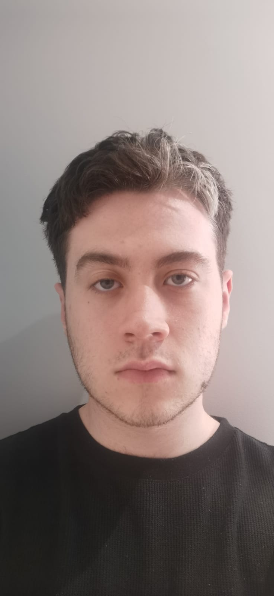

Sobre Mim

Meu nome é Luís Eduardo Rissardo e atualmente sou estudante do curso de Análise e Desenvolvimento de Sistemas na Universidade de Passo Fundo.
Na minha trajetória acadêmica venho aprendendo sobre lógica de programação, desenvolvimento web e organização de projetos desde o ensino médio, quando também fiz um curso técnico nessa área. Atualmente, estou procurando alguma área de atuação que me interesse.
Nos meus interesses estão os video games, música e séries, o básico do jovem que não sai de casa.